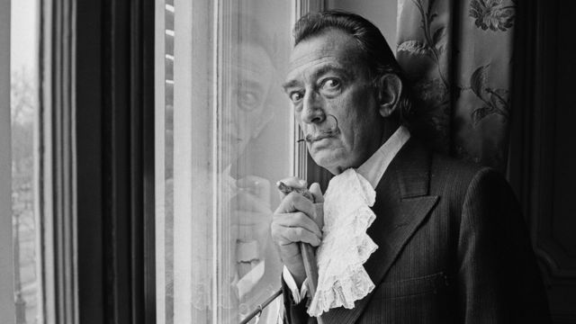
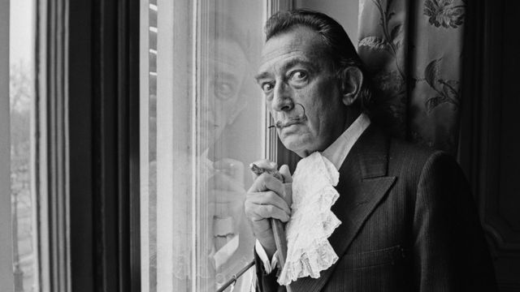

Nacido en Figueres (pueblo que marcaría toda su producción) Dalí nunca fue un niño normal. Tuvo un hermano que murió antes que él y sus padres le pusieron el mismo nombre, Salvador, consintiendo todos sus caprichos.
De adolescente viajó a Madrid, donde experimenta con el cubismo y el dadaísmo y entabla amistad con gentes como Lorca o Buñuel (con él co-dirige Un chien andalou y L’Age d’or). Y es que Dalí no sólo se dedicó a la pintura. Su creatividad abarcó el cine, la escultura, el diseño (el logo de chupa-chups) y la escritura… En París, Dalí es ya toda una personalidad, aunque no sabe desenvolverse como una persona normal. No puede ni cruzar la calle solo. Pero ahí conoce a Gala que se convirtió en esposa, musa y cuidadora.
En 1934 es expulsado de los surrealistas y no repara en insultos contra Breton. («La diferencia entre los surrealistas y yo es que yo soy surrealista») En 1940 se traslada a los Estados Unidos, donde encaja perfectamente con el surrealista capitalismo. En Hollywood fue acogido con los brazos abiertos y colaboró con Disney, Hitchcock, los Hermanos Marx… e invitado a todas las fiestas donde hacía la delicia de la gente con sus salidas de tono.

 
